Весь контент
141 страница

Генераторы
11
Ветрогенератор
Базовый ветряк LV — вырабатывает EU/FE от ветра без топлива; строите выше и в непогоду — получаете больше энергии.
LV
Небесный ветряк
Небесный ветряк T2 — база набирается с высотой вдвое быстрее, пик под облаками, потолок 12 EU/FE/такт; ровный доход в любую погоду.
LV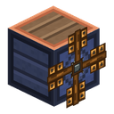
Буревой ветряк
Буревой ветряк T2 — усиленные погодные множители (дождь ×2, гроза ×3.5) и потолок 24 EU/FE/такт; ловец штормов.
LV
Водяная мельница
Пассивный LV-генератор — вырабатывает EU/FE от текущей воды (потока) рядом, без топлива и баков.
LV
Генератор (LV)
Простой генератор на угле и другом твёрдом топливе — стартовый источник EU/FE тира LV для первых машин.
LV
Геотермальный генератор
Вырабатывает EU/FE из лавы — мощнее угольного генератора и реже требует дозаправки.
LVСолнечная панель
Первый источник энергии мода — производит EU/FE днём при открытом небе, с неё начинается вся энергетика.
LV
Дневная солнечная панель
Дневная панель T2 — вчетверо сильнее базовой, работает днём при открытом небе; добывается только эволюцией.
LV
Лунная солнечная панель
Ночная панель T2 — вырабатывает EU/FE ночью при открытом небе и продолжает работать на минимуме в непогоду; добывается только эволюцией.
LV
Громоотвод-генератор
Ловит удар молнии и запасает его в наконечнике — редкая, но крупная порция энергии; если запас не разряжен, удар пропадает впустую.
LV
Креативный источник энергии
Неисчерпаемый источник EU/FE с настраиваемой отдачей — инструмент для проверки схем, недоступный в выживании.

Накопители энергии
4
Зарядная станция
Плита, которая заряжает всё носимое снаряжение вставшего на неё игрока — инвентарь, левую руку и надетое — не требуя ни одного клика.
LV
Сгущатель энергии
Ловит избыток сети и сгущает его в сгусток энергии; какой тир получится — решает игрок моментом изъятия.
LV
Усиленное энергохранилище
MV-накопитель на 100 000 EU/FE — в пять раз ёмче стартового и вчетверо быстрее на приём и отдачу (128 EU/FE/такт).
MVЭнергохранилище
Стартовый LV-накопитель на 20 000 EU/FE — собирает излишки энергии от генератора и ровно отдаёт их машинам (32 EU/FE/такт).
LV
Передача энергии
8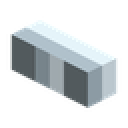
Оловянный кабель
Самый дешёвый LV-кабель; почти не теряет EU/FE, но при реальном потоке голый провод бьёт током.
LV
Изолированный оловянный кабель
Оловянный LV-кабель в резиновой оболочке — минимальные потери и полная защита от контактного удара током.
LVМедный кабель
Дешёвый рабочий LV-кабель; голый провод бьёт игрока током, пока он под напряжением от работающей сети.
LV
Изолированный медный кабель
Медный LV-кабель в резиновой оболочке — вдвое меньше потерь и полная защита от контактного удара током.
LV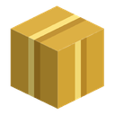
Золотой кабель
Голый MV-кабель — широкий и мощный, но с высокими потерями и серьёзным ударом током при реальном потоке.
MV
Изолированный золотой кабель
Золотой MV-кабель в резиновой оболочке — вдвое меньше потерь и полная защита от контактного удара током.
MV
Электрумный кабель
Голый HV-кабель из электрумных слитков с алмазной прожилкой — самый широкий провод лестницы и с наименьшими потерями ценой дорогого крафта.
HV
Изолированный электрумный кабель
Электрумный HV-кабель в резиновой оболочке — самые низкие потери в моде и полная защита от контактного удара током.
HV
Ядерная техника
13
Контроллер реактора
Мозг реактора: сканирует оболочку, говорит, что с ней не так и где именно, ведёт реакцию и отдаёт EU/FE. Комната не обязательна — без неё он работает слабее и плавит округу.
HV
Оболочка ТВЭЛ
Оболочка топливного стержня без урана: крафтится 3×3, заправляется одним обогащённым ураном и возвращается из колонны, когда стержень выгорел.

Паровая насадка
Дальний конец охлаждающего контура: принимает пар по трубе, стравливает его в воздух облаком частиц и уничтожает — 100 мБ/т на насадку.

Реакторная кнопка
Кнопка из экранирующего сплава: единственный способ подать импульс на шлюзовую дверь изнутри герметичной комнаты, устроенный так же, как ванильная кнопка, но переживающий то, ради чего комната и строится.

Реакторная колонна
Прозрачная стойка на четыре стержня и два бака — вода и пар: наполняется правым щелчком, изнашивает все заряженные стержни разом, а уровень топлива и воды виден снаружи без единого меню.

Реакторная лампа
Блок оболочки, который загорается только у собранной комнаты: единственный источник света внутри герметичной коробки и заодно видимый снаружи признак того, что постройка принята.

Реакторная обшивка
Панель из экранирующего сплава — единственный материал, из которого собирается герметичная оболочка реакторной комнаты.

Реакторное стекло
Прозрачная панель оболочки: считается стеной наравне с обшивкой, но стеклом разрешено закрыть не больше 30 % оболочки — иначе комната перестаёт быть комнатой и становится витриной.

Реакторный ввод
Единственное место, где жидкость пересекает герметичную оболочку: сквозной проход на 50 мБ/т в обе стороны — вода внутрь, пар наружу, — и при этом полноценный блок стены.

Реакторный вывод
Розетка в оболочке реакторной комнаты: контроллер замурован в стену и подключиться к нему негде, поэтому энергия выходит наружу через отдельный блок стены — буфер 512 EU/FE, отдача всеми гранями, наполняет контроллер.
HV
ТВЭЛ
Топливо реактора (тепловыделяющий элемент): обогащённый уран в железной обойме на экранирующем основании. Держит 144 000 EU/FE, показывает остаток прочностью и после выгорания оставляет пустую оболочку.

Шлюзовая дверь реактора
Единственный вход в реакторную комнату: открывается только импульсом редстоуна, закрывается сама через две секунды и никогда не закрывается сквозь того, кто стоит в проёме.
⚡
Экранирующий сундук
Единственный контейнер, который гасит излучение своего содержимого: уран внутри не облучает ни игрока, ни мобов. Вместимость железного сундука — 36 слотов, энергии не требует.

Машины
15
Железная печь
Улучшенная топливная печь между ванильной и электропечью — быстрее ванильной, всё ещё на топливе, без EU/FE.
LV
Лесопилка
Пилит любое дерево в доски, палки, полублоки или ступени с повышенным выходом. Четыре переключаемых режима, питается EU/FE.
LVДробитель
Перемалывает руду (блок и сырьё) в две пыли, тратя EU/FE на тире LV.
LV
Компрессор
Сжимает сырьё в плотные формы — металлическую пыль в слитки, угольную/самоцветную пыль обратно в предметы, лёд в плотный/синий лёд, тростник в бумагу. Замыкает цикл удвоения для неметаллов.
LV
Экстрактор
Вытягивает полезное из сырья — ×2 красителя из цветов, больше семян из тыквы/арбуза, порошок ифритов, кремень из гравия. Хорош для автоферм на воронках.
LV
Электропечь
Плавит всё, что плавит ванильная печь, плюс пыль мода → слитки. Питается EU/FE вместо топлива.
LV
Сплавочная печь
LV-машина с тремя равноправными входными слотами, которая сплавляет несколько металлов в один. Порядок загрузки не важен; из меди, олова, железа, никеля, золота и серебра получаются бронза, инвар, купроникель и электрум.
LV
Электронагреватель
Вспомогательный LV-блок под Вулканизатором. Сначала разогревается, а прогревшись даёт максимальный нагрев ×3. Пока холодный — источником тепла не является.
LV
Полимеризатор
Перегоняет нефть в сырой каучук — бак на 10 вёдер, ведро нефти за операцию. Дальше каучук соединяется с серой в Вулканизаторе.
LV
Вулканизатор
LV-машина, которая соединяет сырой каучук с пылью серы и превращает их в резину. Требует EU/FE и нагрев снизу; более сильный источник тепла повышает выход.
LV
Электрованна
LV-машина гальванического осаждения: превращает волокно и серебряную пыль в водяной ванне во Флюкс-нить — вход в линейку Флюкс-ткани и EU/FE-брони.
LV
Сборочный автомат
Непрерывно штампует верстачные рецепты по схемам за EU/FE, беря сырьё из собственного модульного склада. Держит очередь из трёх схем.
MV
Консервный завод
LV-машина, которая перерабатывает любую еду в одинаковые пайки. Пайки складываются в один стак независимо от того, из чего сделаны, — десяток слотов разносортицы сворачивается в один.
LV
Ремонтный верстак
Восстанавливает изношенный ротор ветряка и колесо водяной мельницы за один предмет и EU/FE — но каждая починка навсегда снижает запас прочности детали.
LV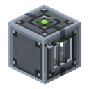
Термоцентрифуга
LV-машина с раскруткой: по сигналу редстоуна ротор набирает обороты, а прогретый нагреватель снизу позволяет ей разделить пыль урана надвое — второе удвоение руды после дробителя.
LV
Машины для жидкостей
2Насос
LV-помпа — выкачивает жидкости из мира или соседних баков во внутренний бак на 10 вёдер и подаёт дальше к приёмникам; обменивается жидкостью с капсулами и чужими ёмкостями.
LV
Перегонная колонна
Вышка 1×1×3 — разгоняет нефть на дизель и мазут. Первый мультиблок мода — собирается из трёх сегментов руками, лёгкая фракция выходит сверху, тяжёлая снизу; при разборке основание сохраняет жидкость.
LV
Логистика предметов
1
Логистика жидкостей
1

Хранение жидкостей
1
Материалы
18
Оловянная руда
Ранний металл мода — руда в мире и цепочка сырьё → пыль → слиток; базовый материал проводов и схем LV.

Серная руда
Самородная сера — добываемый неметалл, который перерабатывается в пыль для вулканизации каучука.

Серебряная руда
Редкий металл-руда мода, рудный блок и цепочка сырьё → пыль → слиток; материал схем и компонентов среднего тира.

Никелевая руда
Самый редкий из металлов мода — руда в мире и цепочка сырьё → пыль → слиток; материал для сплавов и корпусов машин MV.
Урановая руда
Самая редкая руда мода — добывается железной киркой, перерабатывается в пыль и слиток; уже сейчас идёт на факел, телепорт и инкубатор, а позже — на ядерные машины.
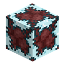
Палладиевая руда
Единственная руда мода из Ада — прячется в незераке, базальте и чернокамне, требует алмазной кирки и перерабатывается в пыль, слиток и пластину.

Нефть
Жидкое ископаемое — конечные озёра в мире, собираются ведром, капсулой и помпой; вязкая, горючая, и с неё начинается резиновая цепочка.
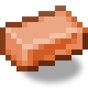
Бронза
Массовый сплав меди и олова — три медных слитка и один оловянный дают в сплавочной печи два бронзовых.

Купроникель
Штучный сплав меди и никеля в отношении один к одному — самый дешёвый по сырью способ пустить никель в дело.

Инвар
Штучный сплав железа и никеля — два железных слитка и один никелевый дают в сплавочной печи один инваровый.
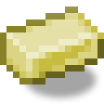
Электрум
Самый дорогой по сырью сплав мода — золотой слиток и серебряный дают в сплавочной печи один электрумовый.

Блок закалённого железа
Компактный блок из 9 слитков закалённого железа — хранит металл в одном слоте и собирается/разбирается на верстаке без потерь.

Обшивка из закалённого железа
Декоративный блок из 4 пластин закалённого железа — «тех-панель» с экраном и линиями; собирается и разбирается на верстаке без потерь.
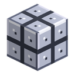
Серебряная обшивка
Декоративный блок из 4 серебряных пластин — металлическая плитка 2×2 с болтами; собирается и разбирается на верстаке без потерь.

Дизель
Лёгкая фракция перегонки нефти — золотисто-жёлтая жидкость, целевой продукт колонны. Будущее топливо жидкотопливного генератора (12 EU/FE/такт).

Мазут
Тяжёлый остаток перегонки нефти — густая тёмно-бурая жидкость. Топливо похуже дизеля (6 EU/FE/такт), но выбрасывать нечего — в топку идёт всё.
Пар
Рабочее тело реакторной комнаты. Единственная жидкость мода, которой нет в мире: ни лужи, ни блока, ни ведра — пар живёт только внутри баков и труб.

Экранирующий сплав
Сплав палладия и закалённого железа — единственный материал реакторной комнаты: слиток, экранирующая пластина и укреплённая пластина, которой нужен ещё и обеднённый уран.

Сельское хозяйство
4
Жердочка
Опора высотой в два блока для вьющихся растений — сейчас на ней растёт хлопок. Ставится на влажную грядку, семя высаживается правым щелчком. Растение один раз долго укореняется, а дальше плодоносит по кругу: собранный урожай не разрушает куст.
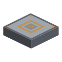
Станция дрона-садовника
LV-станция с EU/FE-буфером, с которой поднимается BER-дрон и облетает грядки в радиусе 4 блоков — вспахивает свободную землю, сажает семена, удобряет недозревшее и свозит спелый урожай обратно в станцию.
LV
Инкубатор
Мультиблок 1×2 — механическая основа плюс стеклянный купол. Мутирует предметы урановым облучением и EU/FE: дублирует, превращает или создаёт новые. Режим задаёт чип, исход вероятностный, с четырьмя грейдами редкости.
LV
Теплица для кристаллов
Герметичная комната любой формы, внутри которой оживлённые рассадники выращивают настоящие ванильные аметистовые друзы. Контроллер заливает объём воздуха, принимает любую замкнутую постройку — купол, пирамиду, крыло — и показывает сборку тем, что оболочка теряет швы. Вода и EU/FE только ускоряют рост, обязательным не является ни то, ни другое.
LV
Хай-тек машины
1
Утилитарные блоки
14Железный сундук
Сундук на 36 слотов — на ряд больше ванильного, с объёмной 3D-моделью, анимированной крышкой и своим звуком. Энергии не требует.
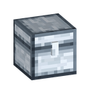
Серебряный сундук
Сундук на 45 слотов — тир выше железного (на ряд больше), с объёмной 3D-моделью и анимированной крышкой. Энергии не требует.

Золотой сундук
Сундук на 54 слота — тир выше серебряного (на ряд больше), с объёмной 3D-моделью и анимированной крышкой. Энергии не требует.

Электрумовый сундук
Сундук на 81 слот — тир выше золотого. Девять рядов за окном на шесть рядов с полосой прокрутки. Энергии не требует.

Модуль хранения
Блок-склад на 27 слотов: примкнувшие друг к другу модули работают как одно хранилище до 108 слотов с общим окном.

Рамка-индикатор
Рамка на сундук — показывает прямо на себе, сколько предметов лежит внутри. Энергии не требует, число видно только с предметом-фильтром в рамке.
LV
Обогащённый урановый факел
Декоративный факел с зелёным пламенем и уровнем света 14 — горит даже под водой. Энергии не требует.

Верстак индустриалиста
Рабочее место жителя «Индустриалист» — скупщика ресурсов мода за изумруды. Поставьте рядом с безработным жителем, и он возьмёт профессию.
Книга-путеводитель
Внутриигровой туториал-книга по всем механикам мода — выдаётся автоматически при первом входе в мир, открывается по правому клику; вкладки, страницы, ссылки. Энергии не требует.

Личный кабинет игрока
Экран-профиль с карьерной статистикой мода и прогрессией мастерства (40 уровней, 8 званий), которая качается от работы машин и, слабее, от производства генераторов.

Бонусный сундук — предметы мода
При создании мира с опцией «Bonus Chest» в сундук добавляются стартовые предметы Ala Industrial поверх ванильных.

Большой отпугиватель
Высшая ступень охранного поля — радиус 24 блока за 64 EU/FE/т; растёт из среднего через Сосуд душ.
HV
Малый отпугиватель
Охранное EU/FE-поле — пока запитан, враждебные мобы убегают из радиуса 8 блоков и не могут подойти. Растёт до среднего и большого через Сосуд душ.
LV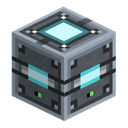
Средний отпугиватель
Вторая ступень охранного поля — радиус 16 блоков за 32 EU/FE/т; растёт из малого через Сосуд душ.
MVАпгрейды
3
Ускоритель — три ступени
Апгрейд из трёх ступеней: каждая режет время операции и удваивает расход энергии. Делается из сгустков энергии.

Чип статистики
Апгрейд, который заставляет машину вести учёт своей работы — время, энергию и обработанные предметы.

Чип-глушитель
Апгрейд, который полностью убирает все звуки машины — вставляется в слот улучшений.

Компоненты
23
Формы материалов (пыль/пластина/болванка)
Пыль и родственные полуфабрикаты (пластина, болванка) — то, во что дробитель и другие машины превращают руды.

Закалённое железо
Слиток из переплавленного ванильного железа — основной материал для инструментов, брони и блока мода.

Металлические шестерни
Семейство шестерён — каменная, железная, золотая и серебряная; крафт-компоненты для будущих механизмов.
Электронная схема
Базовый крафт-компонент — «мозг» почти каждой LV-машины и накопителя.

Машинный корпус
Полнокубовый блок-основа для сборки машин — из 8 железных пластин. LV-машины (дробитель, экстрактор, компрессор) собираются на его базе.

Медная катушка
Крафт-компонент — намотка медного кабеля на оловянном сердечнике; гейт электробура.

Батарея
Первый носитель EU/FE — заряжаемая батарейка на 2000 EU/FE, которая стакается по уровню заряда и отдаёт запас обратно в сеть или в предмет.
LV
Колесо водяной мельницы
Колесо водяной мельницы — ставится в слот колеса; без него генерации нет. Три сорта: чем выше, тем больше EU/FE и дольше служит. Изнашивается при работе.

Ротор ветряка
Лопасти ветряка — ставится в слот ротора любого ветряка T1/T2; без него генерации нет. Три сорта: чем выше, тем больше EU/FE и дольше служит. Изнашивается при работе.

Сетевой анализатор
Ручной диагностический прибор — ПКМ по кабелю показывает статистику энергосети и подсвечивает её в мире.

Пустой чип
Заготовка-основа для чипов-апгрейдов машин; сама по себе эффекта не имеет.

Эволюционные чипы
Пара чипов-эволюторов — солнечный (день) и лунный (ночь) — улучшают базовые панели и ветряки до следующего уровня, перенося накопленную энергию.

Резина
Материал из нефти и серы — Полимеризатор делает сырой каучук, а Вулканизатор с нагревом снизу превращает его в резину.
LV
Продвинутая схема
Схема тира MV — обычная схема, перепаянная золотом и запечатанная резиной.
MV
Продвинутый машинный корпус
Полнокубовый блок-основа для MV-машин — обычный корпус с двумя продвинутыми схемами, обшитый 6 пластинами закалённого железа.
MV
Лапотрон-кристалл
Лапотрон-кристалл — материал для крафта, который не крафтится напрямую: болванка набирает 500 000 EU/FE в зарядном слоте и превращается в готовый кристалл без собственного заряда.
HV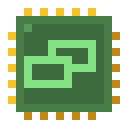
Мутационные чипы
Три чипа задают режим инкубатора — дублирование, трансформация или создание. Не расходуются, но без чипа машина не запускается.

Продукты мутации
Материалы, которые выдаёт только инкубатор: четыре первых ступени эволюционных лестниц, отработанный уран и облучённый шлак.

Резонансная цепочка
Пространственный кристалл, резонансная катушка и чип случайного скачка — три ступени, открывающие телепорту прыжок наугад.
Резонансный кристалл
Резонансный кристалл — материал для крафта, который не крафтится напрямую: болванка набирает 1 500 000 EU/FE в зарядном слоте и превращается в готовый кристалл без собственного заряда.
HV
Сгустки энергии
Три тира сгустков — застывший излишек сети, который выдаёт сгущатель. Единственное сырьё для ускорителей машин.

Флюкс-нить и Флюкс-ткань
Полуфабрикаты EU/FE-брони: нить осаждается в электрованне, четыре нити дают лоскут ткани. Ткань же чинит готовый комплект.

Энергокристалл
Энергокристалл — материал для крафта, который не крафтится напрямую: болванка набирает 100 000 EU/FE в зарядном слоте и превращается в готовый кристалл без собственного заряда.
MV
Игровые предметы
22
Кузнечный молот
Ручной до-машинный инструмент — кладём в верстак молот и слиток, получаем металлическую пластину. Молот остаётся в сетке и теряет 1 прочности за пластину.

Гаечный ключ
Настраивает грани предметной трубы и разбирает блоки мода.

Закалённая железная кирка
Ручная кирка из закалённого железа — чуть лучше ванильной железной по всем характеристикам, но алмазные блоки не копает.

Инструменты из закалённого железа
Набор из пяти ручных инструментов из закалённого железа — кирка, топор, мотыга, лопата и меч; чуть лучше ванильных железных, но алмазные блоки не копают.

Броня из закалённого железа
Полный набор брони из закалённого железа — шлем, нагрудник, поножи и ботинки; прочнее железа, чинится закалённым железом.

Коса
Инструмент для массового скашивания листвы, травы, цветов и прочей декоративной растительности одним взмахом по области, а с зажатым Shift — сбор созревшего урожая по области. При сборе урожая есть шанс выбить дополнительное семя, и он растёт с уровнем косы. Восемь уровней от дерева до незерита.
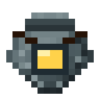
Батарейный мешок
Переносной мешок для предметов с зарядом — вмещает 128 веса, работает от встроенной батареи на 2000 EU/FE и запирается при разряде.
LV
Вакуумная капсула
Стакаемый контейнер на 1 ведро жидкости — до 16 капсул одной жидкости в стаке, наполняется из мира и из танков мода.

Электробур
Заряжаемая алмазная кирка на EU/FE — копает как алмаз, пока есть заряд, тратит EU/FE за блок, не ломается.
LV
Электролопата
Заряжаемая лопата на EU/FE — копает землю, песок и гравий, пока есть заряд, тратит EU/FE за блок, не ломается.
LV
Электропила
Заряжаемый топор на EU/FE — пилит дерево и листву, пока есть заряд, тратит EU/FE за блок, не ломается.
LV
Электромотыга
Заряжаемая мотыга на EU/FE — вспахивает грядки и ломает сено, листву и мох быстрее алмазной, тратя 50 EU/FE за применение; не ломается.
LV
Электромагнит
Заряжаемый на EU/FE предмет в любом слоте инвентаря — притягивает лежащие рядом выпавшие предметы к игроку, тратя EU/FE за каждый.
LV
Энергоранец
Носимый в слоте нагрудника EU/FE-буфер на 20 000 EU/FE — заряжает электро-предметы в инвентаре, пока вы его носите.
LV
Джетпак
Носимый в слоте нагрудника EU/FE-предмет для полёта — тяга при зажатом прыжке, плавное глиссирование при разряде.
LV
Броня из Флюкс-ткани
Первый полноценный EU/FE-комплект мода — шлем, нагрудник, поножи и ботинки из Флюкс-ткани; заряд включает набор утилитарных бонусов, но не отключает защиту.
LV
Анемометр
Меряет скорость ветра там, где стоит игрок, чтобы выбрать высоту под ветряк.

Пульт телепорта
Ручной маяк-пульт — связывается со станцией телепорта shift-ПКМ и запускает прыжок игрока к ней за EU/FE со станции.
LV
Изолирующий сет
Кожаная броня, обмакнутая в слизь — шлем, куртка, штаны и ботинки, которые гасят удар током оголённых кабелей и тратят на это прочность.

Сосуд душ
Накопитель душ для прокачки Отпугивателя мобов — заполняется только личными убийствами враждебных мобов; полный сосуд расходуется на эволюцию блока.

Экранирующий костюм
Комплект защиты от радиации — шлем, куртка, штаны и ботинки из кожи, резины и жёлтого красителя; срезает дозу, тратит прочность и полностью закрывает игрока.

Электросабля
Заряжаемое EU/FE-оружие ближнего боя — 12 урона и лишний блок досягаемости, пока горит клинок; 100 EU/FE за удар, разряд оглушает цель. Выключается по Shift+ПКМ, не ломается.
LV